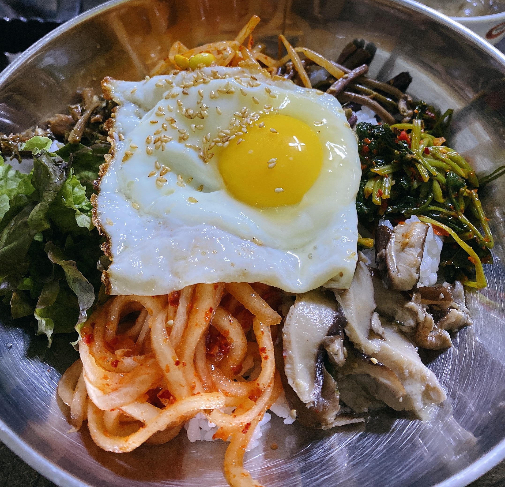
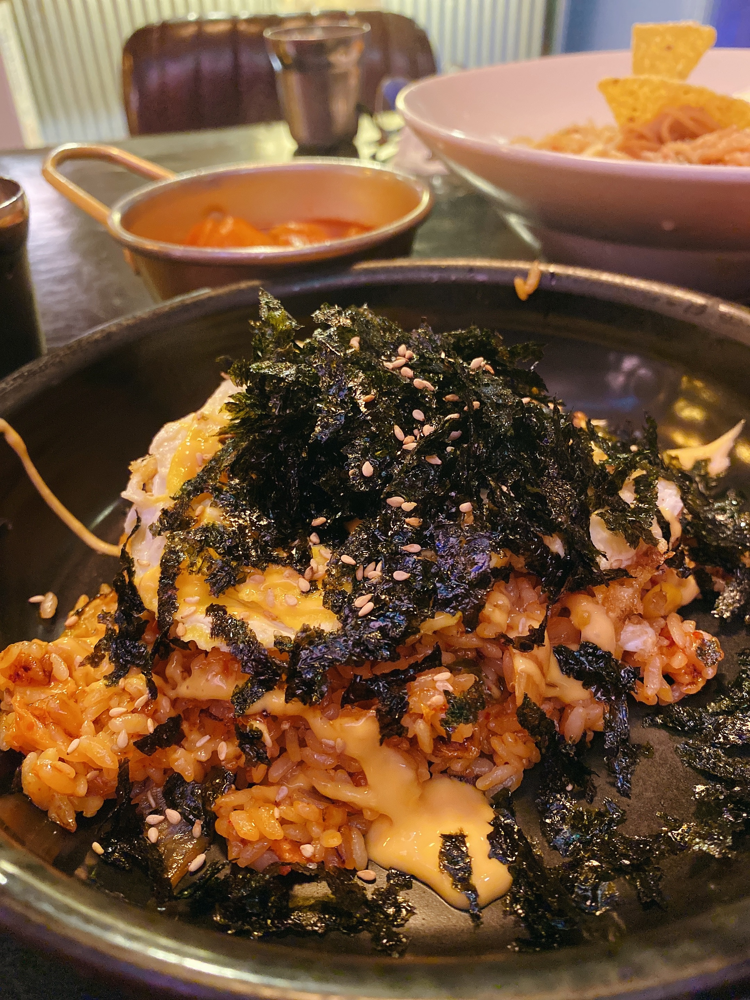
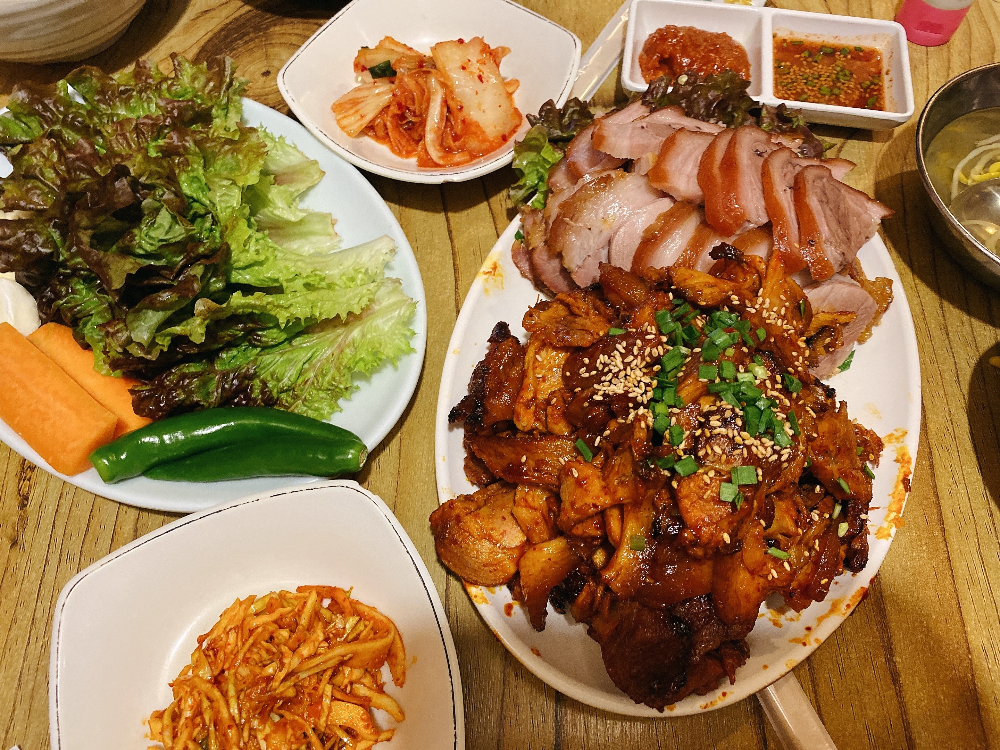

Main
Bibimbap

Bibimbap simply translates to “mixed rice with meat and assorted vegetables“. You can make endless variations to this dish depending on your preference and dietary requirements (e.g. microgreens bibimbap) and also based on the dish/bowl it is served in. Price:169:-
Kimchi fried rice

Kimchi fried rice or kimchi-bokkeum-bap (김치볶음밥) is a variety of bokkeum-bap ("fried rice"), a popular dish in South Korea. Kimchi fried rice is made primarily with kimchi and rice, along with other available ingredients, such as diced vegetables or meats like spam. Price: 169:-
Spicy Chicken Stew

Also called dakbokkeumtang (닭볶음탕) or dakmaeuntang (닭매운탕), dakdoritang (닭도리탕) is a classic chicken dish that’s cooked in a spicy red sauce along with vegetables such as potatoes, carrots, and onions. The result is succulent pieces of chicken packed with spicy and savory flavors! Price: 299:-
Jokbal

Jokbal (족발) is a rich, savory dish made by braising pig’s trotters in seasonings over hours until they totally absorb the flavors and are soft, shiny, and glazed with the meat falling off the bone. Price: 399:-
Ramen and Kimbap

Spicy korean ramen with Gimbap, made from cooked rice and ingredients such as vegetables, fish and meats that are rolled in gim—dried sheets of seaweed—and served in bite-sized slices. Price: 189:-
Dessert
Bingsu

A traditional dessert in Korea, Bingsu is probably the most sought summer dessert in East Asia. It typically consists of chopped fruit, condensed milk, strawberries, kiwi fruit, small pieces of tteok (rice cake), chewy jelly bits, and cereal flakes, fruit syrup, and red beans. Price: 179:-